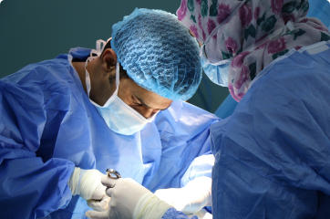

Nuestros departamentos
Contamos con distintos departamentos especializados para brindarte una atención completa y de calidad.

Cuidado de Ojos
Cuidamos tu salud visual con atención profesional y tecnología moderna. Realizamos controles y tratamientos para que veas bien en cada etapa de tu vida.
Aprender más

Terapia Física
Brindamos servicios de terapia física con atención personalizada para aliviar el dolor, recuperar la movilidad y mejorar tu calidad de vida.
Aprender más

Cuidado dental
Ofrecemos cuidado dental integral con atención profesional para mantener tu sonrisa sana, prevenir problemas y mejorar tu salud bucal.
Aprender más

Estudio de diagnóstico
Realizamos estudios de diagnóstico con tecnología avanzada y resultados confiables para una detección precisa y oportuna de tu salud.
Aprender más
Cirugía
Ofrecemos procedimientos quirúrgicos con un equipo altamente capacitado y tecnología moderna, priorizando tu seguridad y una recuperación efectiva.
Aprender más

Servicio de Cirugía
Contamos con servicio de cirugías con profesionales especializados y tecnología moderna, enfocados en tu seguridad y una recuperación óptima.
Aprender más